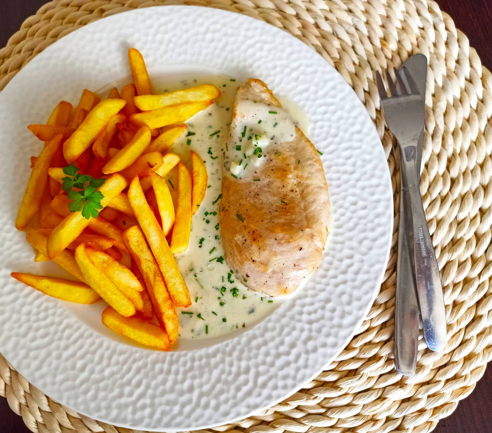

Bylinková omáčka podľa @kataprchlikovic — Normy Jedál
Krásné nedělní odpoledne 💛!
Nedělní oběd bývá "něco lepšího", co většinou vyžaduje čas na pečení, dušení či jinou zdlouhavou proceduru, ale jde to i jinak. Já se dneska pustila do rychlého oběda a rozhodně nám moc chutnalo!
Do sbírky přidávám kuřecí prsa na bylinkové omáčce s hranolky 🤤
.
Na omáčku jste se mě už ptali, tak dneska přidávám i recept:
4 kuřecí prsa
Sůl, mletý černý pepř, olej
Omáčka
4 stroužky česneku nakrájené nadrobno
Bylinky - ideálně čerstvé ( já použila petrželku, pažitku, tymián, libeček a oregano)
400ml vývaru
Smetanu ke šlehání
Sůl, mletý pepř
Lžíci másla
Nejprve si ve velké pánvi rozehřejeme olej a zprudka opečeme okořeněná prsa, vyjmeme je a uchováme v teple.
Do pánve dáme opéct česnek, přidáme vývar, bylinky, sůl a pepř, přidáme smetanu a povaříme. Na závěr omáčku zjemníme kouskem másla a dochutíme!
Dobrou chuť!
.
#prchlikovickuchyne #recept #nedelniobed #comamdneskavarit #covarit #bylinkovaomacka #vkuchyni #varimeslaskou #varime #dnesvarim #minutka #obed #lunch #jednoduchajidla #obycejnajidla #prostejidlo #jidlo #foodie #picoftheday #photooftheday #mnamdopici #varime #vareni #schuti #dobrouchut #bonappetit #recepty